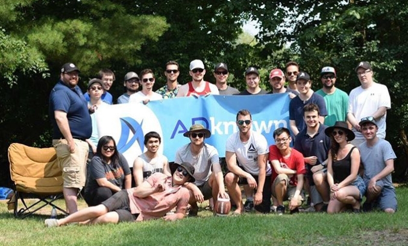
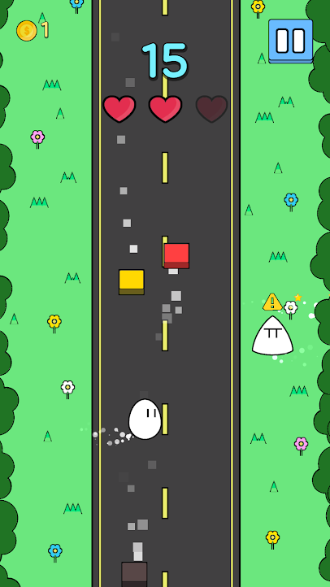
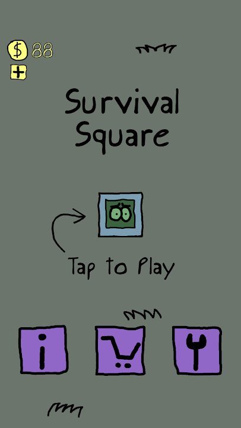
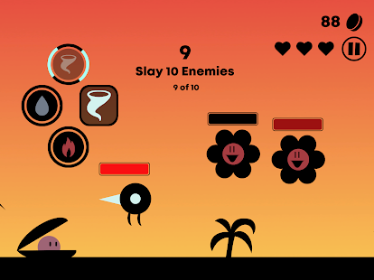
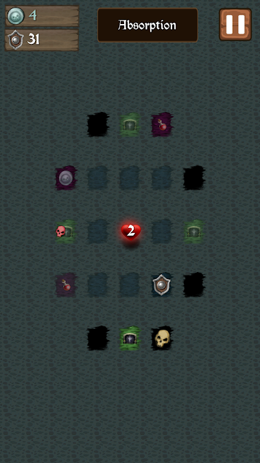
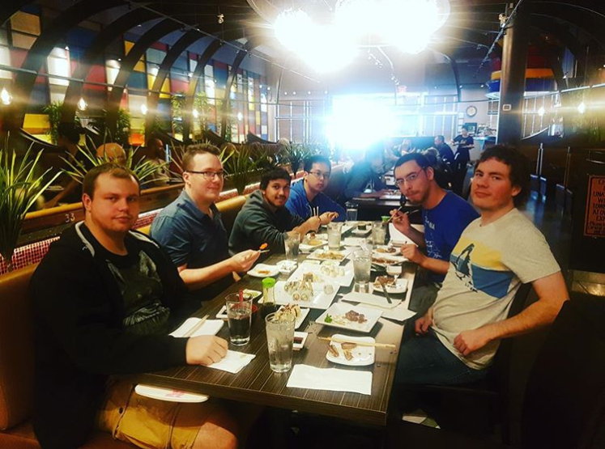
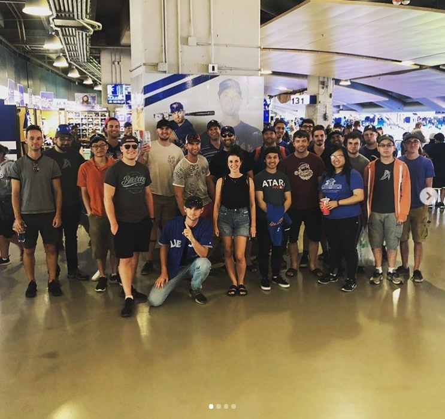

Game development is no simple task. Adknown tought me this, and helped me grow as both
a programmer and a person. I will cover my responsibilities, tasks, goals, and the games
I developed during my four months at Adknown's mobile game development department.
About the Company

Group photo for the company annual outdoor field day in July 2019.
Adknown Inc. is an online media company founded as a startup in 2011. Located in the heart of downtown Guelph,
the
company’s main specialty is advertising technology.
They manage multiple search and web portals as well as having developed a wide array of tools to manage ad
networks and drive traffic to specific environments.
Adknown’s game development department, a.k.a. Adknown Games, utilizes the Unity game engine to develop mobile
phone games for iOS and Android.
The team works in an agile environment, dedicating short development sprints to each game they publish while
still
maintaining a level of quality.
There are currently over 200 games published by Adknown Games that are available on the market. I worked for
Adknown Games from May to August 2019 as a co-op Game Developer.
During my time at Adknown, I developed a total of 6 games (plus one additional, unreleased game I helped
another
developer create).
Goals/Learning Outcomes
Become proficient in Unity.
Develop effective debugging skills that will enhance my overall problem solving skills too.
Improve interpersonal and active listening skills.

My fourth game, Across the Road, helped establish a theme and visual style
for my games going forward.
My first two goals of improving Unity proficiency and debugging skills were directly tied to my task of
developing
games, but my third goal was more personal. In general, I wanted my goals to affect the development of skills I
could utilize in a variety of jobs (hence why I went for some social skill improvement goals).
I mainly wanted to learn skills that would make me a better programmer overall (detail-orientation, debugging,
problem solving, etc). Many of these skills also tie into just having a good work ethic. I wanted to improve
skills that would be useful not only in future work environments, but also useful for my overall work ethic. For
example, I often had trouble figuring out why certain issues would arise in the assignments I coded for some
classes. I hoped that my work at Adknown developing and debugging my own games would help me develop ways to
efficiently catch and remedy my mistakes.
As an avid gamer since childhood, a natural extension to my hobby was deciding to could create my own games and
entertain others with my own creations. Learning Unity, one of the most popular game engines on the market right
now, was a natural step into game development. I was given the opportunity to finally learn and use Unity when
working at Adknown, and I learned a lot about the engine and by extension, game development as a whole.

My last game, Survival Square, could've ended up even better had I not
spent
so much time on animation.
I also wanted to utilize version control systems in a professional environment. I’ve only ever used systems like
Github as a repository to store projects rather than continuously update them, so seeing a system in action
could
show me how to better organize my own projects in the future. At Adknown, we used Bitbucket to keep archives of
our games’ files. It was a good system that I don’t have any qualms with.
Finally, I wanted a better taste of working with mobile systems. I made some rudimentary Android projects in the
past, but never explored making full fledged apps for it or iOS. While I did learn about the importance of
making
a product that can conform to all sorts of resolutions, I didn’t directly code in Android Studio or Swift. I
just
programmed my games in C# and Unity would handle conversion and compilation for iOS or Android systems itself. A
bit disappointing, but it did save a lot of work doing the conversion manually.
Proficiency in Unity: I definitely became more proficient in Unity (when your knowledge before landing
the
job was
nothing, the only real place to go is up), but still have a lot of room to grow. I feel like I’m in that stage
where I know how to do basic stuff like working in one game scene and using Unity specific tools (prefabs,
aniamtion override controllers, etc.) but am still in the dark about more advanced stuff (multiple scenes) or
little tricks that could improve my efficiency.
Debugging: This is difficult to gauge because I didn’t really follow any of my outlined steps in my
goal
(writing
down a process to follow when debugging), but I still feel like I’ve become more “aware” of what I type. Back
in
school, I felt like I’d go on autopilot regularly and forget about blocks of code I just wrote. By developing
and
tending to a sizable project I made in a professional work environment, I think I became better at identifying
connections between the cause and effect of issues that arose.
Social Skills: I feel like this is the goal I had the most accomplished. I can’t really measure this
one
with a
scale or anything, but I ended the co-op term on at least acquaintance terms with every co-worker on Adknown’s
game development team, which I’m proud of. I believe I improved my active listening skills throughout the
semester
by taking feedback from teammates regarding game design.
In conclusion, I made noticeable progress on all my goals. I wouldn’t technically call any of them complete,
which
was my plan from the start. They’re goals that I want to develop over time; seeing some sort of positive net
gain
on them during my time at Adknown is enough to make me satisfied that I spent my time there wisely.
Job Description

My fifth game, Magic Shell Spell, was my favourite in terms of visual style
and gameplay idea. The execution could've been a bit better though.
At Adknown Games, we developed games for iOS and Android over 2 week cycles. This short development time means
we
can’t explore overly ambitious ideas (sorry, no JRPGs). We also have to steer clear of any ideas too closely
resembling previous Adknown games, but other than that anything’s fair game as long as the Team Lead says it’s
okay.
A typical cycle at Adknown Games usually followed this strict format:
Concept Development: Spend some time to brainstorm a game idea. If the idea is deemed feasible and good
by
the
Team Lead, begin paper prototyping and planning how you’re going to develop the thing.
Initial Development: Time to make your game! Right now, the focus is the main gameplay loop and UI. Finishing
the
UI now saves a lot of headache later, and having your basic gameplay completed is basically mandatory in order
to
complete the next step.
Mid-cycle Quality Assurance (QA): Your game is evaluated by the Team Lead and fellow developers. Most
of
the big
glaring issues in your game’s design will likely be discovered here. Sometimes you’ll have to rework your game
entirely once enough problems are found, but luckily I’ve never had to do that. I did have to make a
substantial
changes to my games usually, but it was always for the better.
Final Development: Get the music and sound in your game. Set up the shop so the user can buy cool
cosmetics
using
in-game currency. Create a list of missions for players to tackle. Basically, drop a large bucket of polish
onto
your game so that it can exceed standards.
Publishing and End-of-cycle QA: Get your game ready to launch on the Play Store and/or App Store by
preparing
promotional material and writing good, keyword-heavy descriptions. Also, the Team Lead and other developers
will
give your game one final look to make sure it’s up to snuff before you’re given the green light to send your
game
into open beta.
With a cycle as tight as this, good time management and organization are key. During development of my final
game,
Survival Square, I spent far too much time trying to get animation override controllers working so that my
enemies
could have animated sprites. As a result, I had to hustle during the final stages of development and didn’t have
as much polish put in as I would’ve liked. Had I better managed my time and made decisions faster, I like
could've
made the final product even better.

My second game, Tile Shield, had the most stressful development out of any
of
my games. The final product is definitely a game all right, and also remains a project I probably should’ve
saved for when I had more experience up my belt.
Creativity was also a useful skill to have on hand during development. Obviously, a more creative mind can
produce
more creative game ideas, but creativity can also bleed into other aspects of development. Making shop items
that
are meaningful and get a chuckle out of others, smart sound design that clearly indicates what the developer
wants
the player to know about something, all of these are affected by the developer’s creativity.
There’s many other skills that are useful for a job such as this. One of my fellow co-op hires mentions
resilience, which I can’t deny, but many basic programming skills such as debugging, problem solving and
critical
thinking are also necessary. Working as a game developer at Adknown was definitely not easy, but had many
satisfying and rewarding moments that made the grind worth it.
To conclude this section, I’ll mention that the actual things taught in class aren’t too useful for this job. No
C
or memory management in sight here. However, classes do teach the importance of deadlines, of how to write good
code, and how to solve problems when your head is plastered against a brick wall, all of which were invaluable
skills to have working as a game developer at Adknown. So in conclusion, school was useful and developing games
in
2 week cycles is simultaneously stressful and satisfying.
Conclusion

The Adknown Game Dev team celebrates the end of the semester with a lunch at
Cherry Blossom Sushi Bar.
In conclusion, my time spent at Adknown was a great learning experience. I was able to explore the joys and
frustrations of game development and learned a lot about game design and good programming practice. I improved
my
coding and social skills after setting and achieving substantial progress on my goals. Finally, I got to do it
all
with a reliable team who weren’t afraid to give constructive criticism and crack some jokes too.
Though my time working at Adknown was fun, it also helped me realize that game development is not for me. I’ll
likely keep game development as a side hobby rather than the main focus of my career. Still, I have developed a
humble appreciation for those who dedicate their lives to the difficult path of game development. I’m thankful
for
my time spent at Adknown and wish only the best for everyone there.
Acknowledgements

The entire team visited the Rogers Centre in August 2019 to watch the
Toronto
Blue Jays take on the Texas Rangers! The Jays lost.
Special thanks to the following people for making my time at Adknown a blast:
Erik Zorn-Wallentin, my team lead and supervisor, for helping me create the best games I could and
teaching me a
lot about not only game design, but to have confidence in my own abilities.
Ivan Boyko, for helping me out of a pickle more than once and being a solid, albeit cynical,
cornerstone of the
team.
Jeff Polasz, Daniel Praymayer and Linda Ngo, for the valuable feedback you all gave regarding my
games
and making
the workplace a great place.
Ashley Monoogian, for her hard work in making sure Linda and I had the best co-op terms possible and
also for
helping me deal with faulty plumbing on one occasion.
Matt Scadding, for providing insightful and constructive criticism on our games and acting somewhat
like the game
dev team’s dad.
Everyone else at Adknown that I haven’t mentioned; though I didn’t know many of you by name, you all
made company
events a blast.